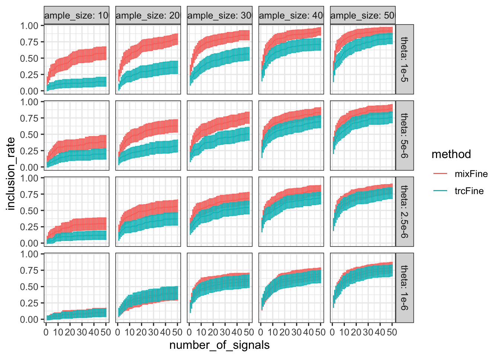
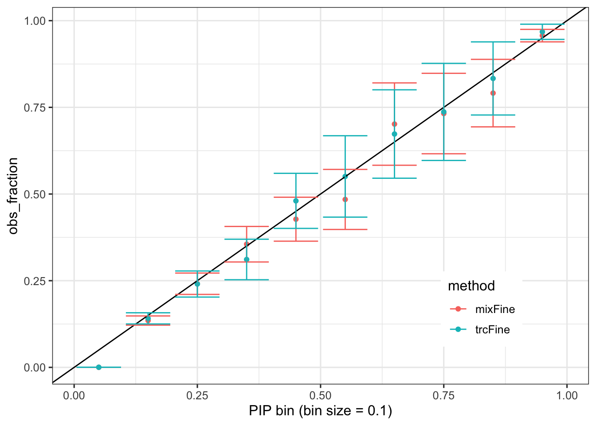
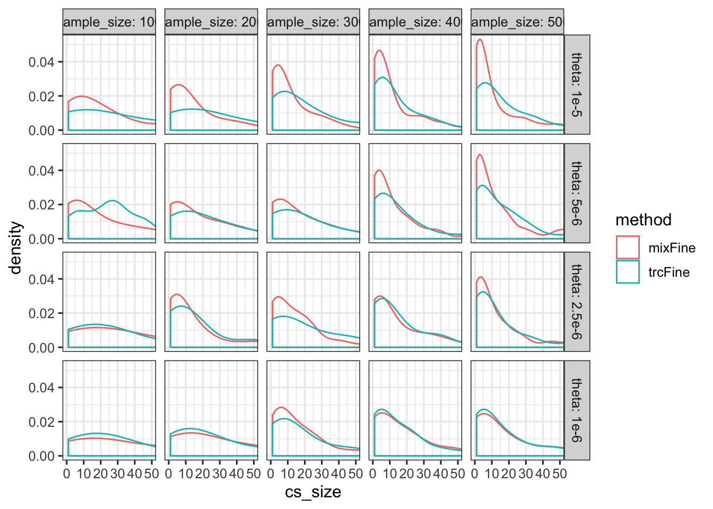
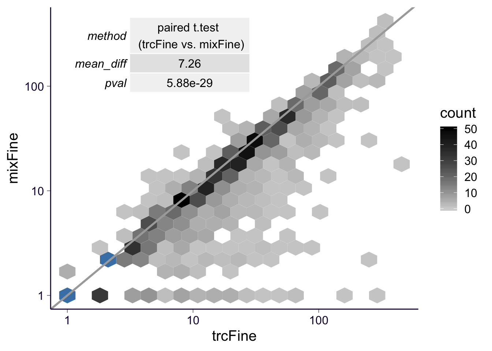
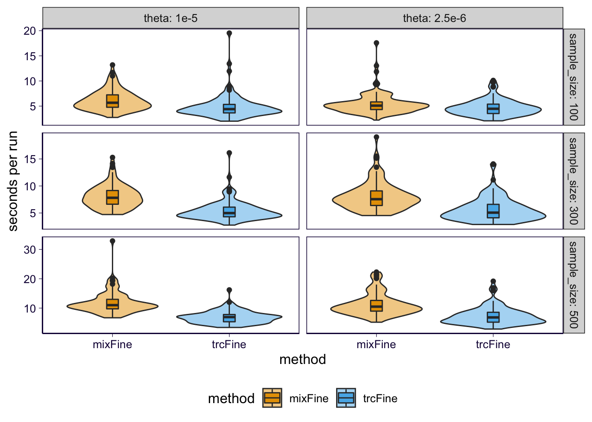
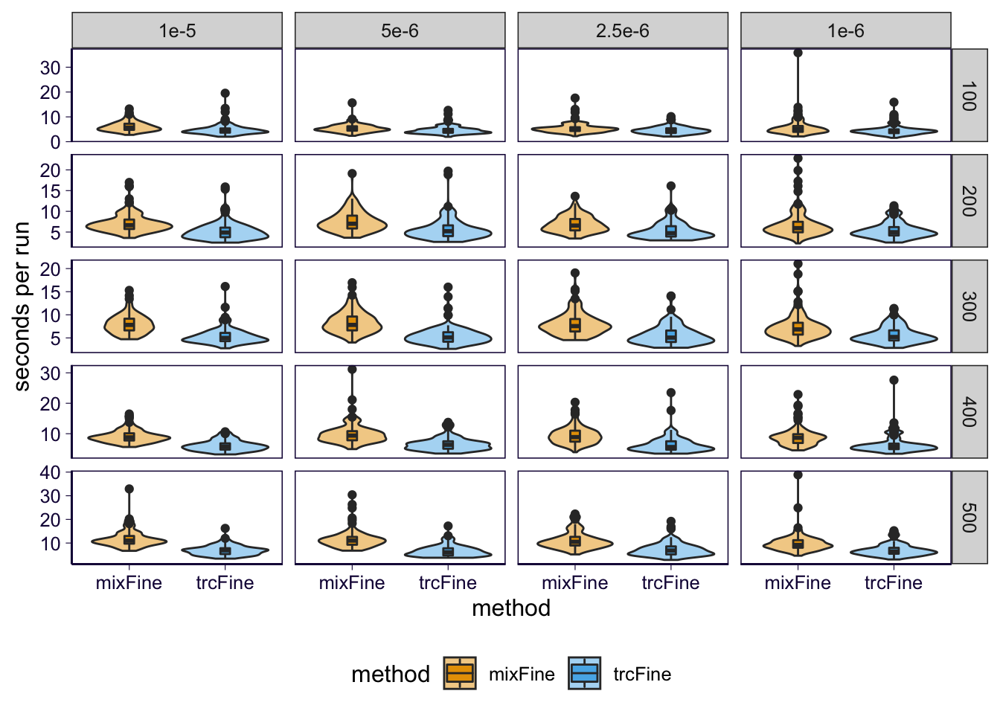

rm(list = ls())
library(ggplot2)
theme_set(theme_bw(base_size = 12))
library(dplyr)
library(reshape2)
options(stringsAsFactors = FALSE)
source('../code/rlib_analysis.R')
datadir = '~/Desktop/mixqtl-pipeline-results/simulation-mixfine/'
cbPalette2 <- c("ascFine" = "#999999", "mixFine" = "#E69F00", "trcFine" = "#56B4E9")
source('https://gist.githubusercontent.com/liangyy/43912b3ecab5d10c89f9d4b2669871c9/raw/8151c6fe70e3d4ee43d9ce340ecc0eb65172e616/my_ggplot_theme.R')
th2 = th
th$panel.border = element_rect(colour = th$axis.line$colour)
get_true_varid = function(v, beta) {
if(sum(beta != 0) != 1) {
return(NA)
} else {
return(v[beta != 0])
}
}thetas = c('1e-5', '5e-6', '2.5e-6', '1e-6')
samplesizes = (1 : 5) * 100
methods = list(trcfine = 'trcFine', mixfine = 'mixFine')
inclusion = list()
cs_size = list()
calibration = list()
timer = list()
for(theta in thetas) {
for(samplesize in samplesizes) {
for(method in names(methods)) {
m = methods[[method]]
jobname = paste0('samplesize', samplesize, '_x_', 'theta', theta)
filename = paste0(datadir, '/', jobname, '/', 'merge-', method, '.from1_to100.rds')
temp = readRDS(filename)
# inclusion curve
inclusion_sub = list()
for(i in unique(temp$vars$simulation)) {
pip = temp$vars[temp$vars$simulation == i, ]
inclusion_sub_temp = inclusion_curve(pip$beta_true != 0)
inclusion_sub[[length(inclusion_sub) + 1]] = inclusion_sub_temp
}
inclusion_sub = do.call(rbind, inclusion_sub)
inclusion_sub$method = m
inclusion_sub$sample_size = samplesize
inclusion_sub$theta = theta
inclusion[[length(inclusion) + 1]] = inclusion_sub
calibration[[length(calibration) + 1]] = data.frame(pip = temp$vars$variable_prob, is_true = temp$vars$beta_true != 0) %>% mutate(pip_bin = floor(pip * 10)) %>% group_by(pip_bin) %>% summarise(total = n(), nsig = sum(is_true)) %>% ungroup() %>% mutate(method = m, theta = theta, sample_size = samplesize)
# size of credible set
cs_temp = temp$vars %>% group_by(cs, simulation) %>% filter(cs != -1) %>% summarise(is_true = sum(beta_true != 0) > 0, size = n(), varid_true = get_true_varid(variable, beta_true)) %>% ungroup() %>% filter(is_true)
cs_sub = data.frame(cs_size = cs_temp$size, simulation = cs_temp$simulation, varid_true = cs_temp$varid_true)
cs_sub$method = m
cs_sub$sample_size = samplesize
cs_sub$theta = theta
cs_size[[length(cs_size) + 1]] = cs_sub
timer[[length(timer) + 1]] = temp$timer %>% mutate(method = m, theta = theta, sample_size = samplesize)
}
}
}## `summarise()` ungrouping output (override with `.groups` argument)## `summarise()` regrouping output by 'cs' (override with `.groups` argument)## `summarise()` ungrouping output (override with `.groups` argument)## `summarise()` regrouping output by 'cs' (override with `.groups` argument)## `summarise()` ungrouping output (override with `.groups` argument)## `summarise()` regrouping output by 'cs' (override with `.groups` argument)## `summarise()` ungrouping output (override with `.groups` argument)## `summarise()` regrouping output by 'cs' (override with `.groups` argument)## `summarise()` ungrouping output (override with `.groups` argument)## `summarise()` regrouping output by 'cs' (override with `.groups` argument)## `summarise()` ungrouping output (override with `.groups` argument)## `summarise()` regrouping output by 'cs' (override with `.groups` argument)## `summarise()` ungrouping output (override with `.groups` argument)## `summarise()` regrouping output by 'cs' (override with `.groups` argument)## `summarise()` ungrouping output (override with `.groups` argument)## `summarise()` regrouping output by 'cs' (override with `.groups` argument)## `summarise()` ungrouping output (override with `.groups` argument)## `summarise()` regrouping output by 'cs' (override with `.groups` argument)## `summarise()` ungrouping output (override with `.groups` argument)## `summarise()` regrouping output by 'cs' (override with `.groups` argument)## `summarise()` ungrouping output (override with `.groups` argument)## `summarise()` regrouping output by 'cs' (override with `.groups` argument)## `summarise()` ungrouping output (override with `.groups` argument)## `summarise()` regrouping output by 'cs' (override with `.groups` argument)## `summarise()` ungrouping output (override with `.groups` argument)## `summarise()` regrouping output by 'cs' (override with `.groups` argument)## `summarise()` ungrouping output (override with `.groups` argument)## `summarise()` regrouping output by 'cs' (override with `.groups` argument)## `summarise()` ungrouping output (override with `.groups` argument)## `summarise()` regrouping output by 'cs' (override with `.groups` argument)## `summarise()` ungrouping output (override with `.groups` argument)## `summarise()` regrouping output by 'cs' (override with `.groups` argument)## `summarise()` ungrouping output (override with `.groups` argument)## `summarise()` regrouping output by 'cs' (override with `.groups` argument)## `summarise()` ungrouping output (override with `.groups` argument)## `summarise()` regrouping output by 'cs' (override with `.groups` argument)## `summarise()` ungrouping output (override with `.groups` argument)## `summarise()` regrouping output by 'cs' (override with `.groups` argument)## `summarise()` ungrouping output (override with `.groups` argument)## `summarise()` regrouping output by 'cs' (override with `.groups` argument)## `summarise()` ungrouping output (override with `.groups` argument)## `summarise()` regrouping output by 'cs' (override with `.groups` argument)## `summarise()` ungrouping output (override with `.groups` argument)## `summarise()` regrouping output by 'cs' (override with `.groups` argument)## `summarise()` ungrouping output (override with `.groups` argument)## `summarise()` regrouping output by 'cs' (override with `.groups` argument)## `summarise()` ungrouping output (override with `.groups` argument)## `summarise()` regrouping output by 'cs' (override with `.groups` argument)## `summarise()` ungrouping output (override with `.groups` argument)## `summarise()` regrouping output by 'cs' (override with `.groups` argument)## `summarise()` ungrouping output (override with `.groups` argument)## `summarise()` regrouping output by 'cs' (override with `.groups` argument)## `summarise()` ungrouping output (override with `.groups` argument)## `summarise()` regrouping output by 'cs' (override with `.groups` argument)## `summarise()` ungrouping output (override with `.groups` argument)## `summarise()` regrouping output by 'cs' (override with `.groups` argument)## `summarise()` ungrouping output (override with `.groups` argument)## `summarise()` regrouping output by 'cs' (override with `.groups` argument)## `summarise()` ungrouping output (override with `.groups` argument)## `summarise()` regrouping output by 'cs' (override with `.groups` argument)## `summarise()` ungrouping output (override with `.groups` argument)## `summarise()` regrouping output by 'cs' (override with `.groups` argument)## `summarise()` ungrouping output (override with `.groups` argument)## `summarise()` regrouping output by 'cs' (override with `.groups` argument)## `summarise()` ungrouping output (override with `.groups` argument)## `summarise()` regrouping output by 'cs' (override with `.groups` argument)## `summarise()` ungrouping output (override with `.groups` argument)## `summarise()` regrouping output by 'cs' (override with `.groups` argument)## `summarise()` ungrouping output (override with `.groups` argument)## `summarise()` regrouping output by 'cs' (override with `.groups` argument)## `summarise()` ungrouping output (override with `.groups` argument)## `summarise()` regrouping output by 'cs' (override with `.groups` argument)## `summarise()` ungrouping output (override with `.groups` argument)## `summarise()` regrouping output by 'cs' (override with `.groups` argument)## `summarise()` ungrouping output (override with `.groups` argument)## `summarise()` regrouping output by 'cs' (override with `.groups` argument)## `summarise()` ungrouping output (override with `.groups` argument)## `summarise()` regrouping output by 'cs' (override with `.groups` argument)## `summarise()` ungrouping output (override with `.groups` argument)## `summarise()` regrouping output by 'cs' (override with `.groups` argument)inclusion = do.call(rbind, inclusion)
cs_size = do.call(rbind, cs_size)
calibration = do.call(rbind, calibration)
timer = do.call(rbind, timer)
inclusion$theta = factor(inclusion$theta, levels = thetas)
cs_size$theta = factor(cs_size$theta, levels = thetas)
timer$theta = factor(timer$theta, levels = thetas)
calibration$pip_bin[calibration$pip_bin == 10] = 9
calibration = calibration %>% group_by(method, pip_bin) %>% summarise(nsig = sum(nsig), n = sum(total))## `summarise()` regrouping output by 'method' (override with `.groups` argument)inclusion %>% group_by(theta, sample_size, method, number_of_signals) %>% summarize(inclusion_rate = mean(inclusion_rate), n = n()) %>% ungroup() %>% mutate(rate_se = sqrt(inclusion_rate * (1 - inclusion_rate) / n)) %>% ggplot() + geom_line(aes(x = number_of_signals, y = inclusion_rate, color = method)) + facet_grid(theta ~ sample_size, labeller = label_both) + geom_errorbar(aes(x = number_of_signals, ymin = inclusion_rate - 1.96 * rate_se, ymax = inclusion_rate + 1.96 * rate_se, color = method))## `summarise()` regrouping output by 'theta', 'sample_size', 'method' (override with `.groups` argument)
calibration %>% mutate(obs_fraction = nsig / n) %>% mutate(obs_fraction_se = sqrt(obs_fraction * (1 - obs_fraction) / n)) %>% ggplot() + geom_point(aes(x = (pip_bin + .5) / 10, y = obs_fraction, color = method)) + geom_abline(slope = 1, intercept = 0) + geom_errorbar(aes(x = (pip_bin + .5) / 10, ymin = obs_fraction - 1.96 * obs_fraction_se, ymax = obs_fraction + 1.96 * obs_fraction_se, color = method)) + theme(legend.position = c(0.8, 0.2)) + xlab('PIP bin (bin size = 0.1)')
cs_size %>% ggplot() + geom_density(aes(x = cs_size, color = method)) + facet_grid(theta ~ sample_size, labeller = label_both) + coord_cartesian(xlim = c(0, 50)) 
source('https://gist.githubusercontent.com/liangyy/43912b3ecab5d10c89f9d4b2669871c9/raw/8151c6fe70e3d4ee43d9ce340ecc0eb65172e616/my_ggplot_theme.R')
th$panel.border = element_rect(colour = th$axis.line$colour)
methods = c('trcFine', 'mixFine')
thetas = c('1e-5', '2.5e-6')
sample_sizes = c(100, 300, 500)
this_in = inclusion
# this_in$method[this_in$method == 'glmnet_cv'] = 'trcFine'
# this_in$method[this_in$method == 'mixnet_metafine_full'] = 'mixFine'
p = this_in %>% filter(method %in% methods, sample_size %in% sample_sizes, theta %in% thetas) %>% group_by(theta, sample_size, method, number_of_signals) %>% summarize(inclusion_rate = mean(inclusion_rate), n = n()) %>% ungroup() %>% mutate(rate_se = sqrt(inclusion_rate * (1 - inclusion_rate) / n)) %>% ggplot() + geom_line(aes(x = number_of_signals, y = inclusion_rate, color = method)) + facet_grid(sample_size~theta, labeller = label_both) + geom_errorbar(aes(x = number_of_signals, ymin = inclusion_rate - 1.96 * rate_se, ymax = inclusion_rate + 1.96 * rate_se, color = method), alpha = .7) + scale_color_manual(values=cbPalette2)## `summarise()` regrouping output by 'theta', 'sample_size', 'method' (override with `.groups` argument)p = p + theme(legend.position = 'bottom')
p = p + th
p = p + xlab('Number of SNPs considered as positive') + ylab('Power') + theme(aspect.ratio = 1)
ggsave('../output/grid_sim-multi_0613_finemap_inclusion.png', p, height = 5.5, width = 3.5)
ggsave('../output/grid_sim-multi_0613_finemap_inclusion.pdf', p, height = 5.5, width = 3.5)shift_x = 0.01
this_ca = calibration
# this_ca$method[this_ca$method == 'glmnet_cv'] = 'trcFine'
# this_ca$method[this_ca$method == 'mixnet_metafine_full'] = 'mixFine'
this_ca$shift = 1
this_ca$shift[this_ca$method == 'mixFine'] = -1
p = this_ca %>% filter(method %in% methods) %>% mutate(obs_fraction = nsig / n, x = (pip_bin + .5) / 10) %>% mutate(obs_fraction_se = sqrt(obs_fraction * (1 - obs_fraction) / n)) %>% mutate(x_pos = x + shift * shift_x) %>% ggplot(aes(x = x_pos)) + geom_abline(slope = 1, intercept = 0, linetype = 2) + geom_point(aes(y = obs_fraction, color = method, group = method), position = position_dodge(.2)) + geom_errorbar(aes(ymin = obs_fraction - 1.96 * obs_fraction_se, ymax = obs_fraction + 1.96 * obs_fraction_se, color = method, group = method), width = .01, position = position_dodge(.2)) + theme(legend.position = c(0.8, 0.2)) + scale_color_manual(values=cbPalette2) + theme(axis.text.x = element_text(angle = 45, hjust = 1, vjust = 1))
p = p + th
p = p + ylab('Fraction of true positives') + xlab('PIP bin (bin size = 0.1)') + coord_equal(xlim = c(0, 1), ylim = c(0, 1))
ggsave('../output/grid_sim-multi_0613_finemap_calibration.png', p, height = 3.5, width = 3.5)## Warning: position_dodge requires non-overlapping x intervalsggsave('../output/grid_sim-multi_0613_finemap_calibration.pdf', p, height = 3.5, width = 3.5)## Warning: position_dodge requires non-overlapping x intervalsthis_cs = cs_size
# this_cs$method[this_cs$method == 'glmnet_cv'] = 'trcFine'
# this_cs$method[this_cs$method == 'mixnet_metafine_full'] = 'mixFine'
p = this_cs %>% filter(method %in% methods, sample_size %in% sample_sizes, theta %in% thetas) %>% ggplot() + geom_histogram(aes(x = cs_size, fill = method), binwidth = 5) + facet_grid(sample_size~theta, labeller = label_both) + coord_cartesian(xlim = c(0, 50)) + scale_fill_manual(values=cbPalette2)
p = p + th
p = p + theme(legend.position = 'bottom')
p = p + xlab('Size of 95% credible set') + ylab('Count of occurence') + theme(aspect.ratio = 1)
ggsave('../output/grid_sim-multi_0613_finemap_cs.png', p, height = 5.5, width = 3.5)Compare the mean of CS size. And do QQ-plot.
# CS size boxplot
p = this_cs %>% filter(method %in% methods, sample_size %in% sample_sizes, theta %in% thetas) %>% ggplot(aes(x = method, y = cs_size, fill = method)) +
geom_violin() +
geom_boxplot(width = .2) + th + scale_fill_manual(values = cbPalette2) +
facet_grid(sample_size~theta, labeller = label_both, scales = 'free_y')
p = p + xlab('Size of 95% credible set') + ylab('Method')
p = p + theme(legend.position = 'bottom')
ggsave('../output/grid_sim-multi_0613_finemap_cs_boxplot.png', p, height = 5.5, width = 3.5)
# get_quantile = function(x, probs = 0 : 50 / 100) {
# tmp = quantile(x, probs = probs)
# data.frame(quantiles = names(tmp), values = as.numeric(tmp))
# }
#
# test_mean = function(values, labels) {
# v1 = values[labels == 'mixFine']
# v2 = values[labels == 'trcFine']
# tmp = t.test(v1, v2)
# data.frame(mean_mixFine = tmp$estimate[1], mean_trcFine = tmp$estimate[2], pval = tmp$p.value)
# }
#
# # test mean
# this_cs %>% filter(method %in% methods, sample_size %in% sample_sizes, theta %in% thetas) %>%
# group_by(sample_size, theta) %>% do(test_mean(.$cs_size, .$method))
# %>%
# dcast(sample_size + theta + quantiles ~ method, value.var = 'values') %>%
# ggplot() + geom_point(aes(x = trcFine, y = mixFine)) +
# facet_grid(sample_size~theta, labeller = label_both, scales = 'free_y')
# limit to signals identified in both
paired = cs_size %>% dcast(simulation + varid_true + sample_size + theta ~ method, value.var = 'cs_size') %>% filter(!is.na(mixFine), !is.na(trcFine))
paired_ttest = t.test(paired$trcFine, paired$mixFine, paired = T)
df_ttest = t(data.frame(method = 'paired t.test \n (trcFine vs. mixFine)', mean_diff = signif(paired_ttest$estimate, digits = 3), pval = signif(paired_ttest$p.value, digits = 3)))
colnames(df_ttest) = NULL
p = paired %>% ggplot() + geom_point(aes(x = trcFine, y = mixFine), alpha = 0.1, size = 4) + th2 +
geom_abline(slope = 1, intercept = 0, color = 'gray')
p = p + annotation_custom(gridExtra::tableGrob(df_ttest), xmin=130, xmax=130, ymin=390, ymax=390)
p = p + xlab('Size of 95% credible set in trcFine') + ylab('Size of 95% credible set in mixFine')
# in log scale
p = paired %>% ggplot() +
geom_hex(aes(x = trcFine, y = mixFine),bins=20) + #th2 +
geom_abline(slope = 1, intercept = 0, color = 'dark gray',size=1) +
annotation_custom(gridExtra::tableGrob(df_ttest), xmin=0.7, xmax=0.75, ymin=2.3, ymax=2.3) + theme_bw(base_size = 15) +
scale_x_log10() + scale_y_log10() +
scale_fill_gradient( limits = c(0, 50),
low = "light gray",
high = "black",
na.value="steelblue") + th2 ; p
ggsave('../output/grid_sim-multi_0613_finemap_cs_pairwise.png', p, height = 5.5, width = 6.5)
p = paired %>% ggplot() +
geom_hex(aes(x = trcFine, y = mixFine),bins=20) + #th2 +
geom_abline(slope = 1, intercept = 0, color = 'dark gray',size=1) +
annotation_custom(gridExtra::tableGrob(df_ttest), xmin=0.7, xmax=0.75, ymin=2.3, ymax=2.3) + theme_bw(base_size = 15) +
scale_x_log10() + scale_y_log10() +
scale_fill_gradient( limits = c(0, 50),
low = "light gray",
high = "black",
na.value="steelblue") + th2 +
theme(legend.position = c(0.1, 0.5)) + coord_equal()
ggsave('../output/grid_sim-multi_0613_finemap_cs_pairwise.pdf', p, height = 5.5, width = 5.8)
# CS size boxplot (limit to signals identified in both)
p = this_cs %>% filter(method %in% methods, sample_size %in% sample_sizes, theta %in% thetas) %>%
filter(paste(simulation, varid_true, sample_size, theta) %in% paste(paired$simulation, paired$varid_true, paired$sample_size, paired$theta)) %>%
ggplot(aes(x = method, y = cs_size, fill = method)) +
geom_violin() +
geom_boxplot(width = .2) + th + scale_fill_manual(values = cbPalette2) +
facet_grid(sample_size~theta, labeller = label_both, scales = 'free_y')
p = p + xlab('Size of 95% credible set') + ylab('Method')
p = p + theme(legend.position = 'bottom')
ggsave('../output/grid_sim-multi_0613_finemap_cs_boxplot_restricted.png', p, height = 5.5, width = 3.5)
#
# p = paired %>% filter(sample_size %in% sample_sizes, theta %in% thetas) %>%
# ggplot() + geom_point(aes(x = trcFine, y = mixFine), alpha = 0.1, size = 4) + th +
# geom_abline(slope = 1, intercept = 0, color = 'gray') +
# facet_grid(sample_size~theta, labeller = label_both, scales = 'free_y') df_cpu = timer # df_runtime
df_cpu$method = as.character(df_cpu$method)
# this_rt$method[this_rt$method == 'glmnet_cv'] = 'TRC_only'
# this_rt$method[this_rt$method == 'mixnet_metafine_full'] = 'mixFine'
# p = this_rt %>% filter(method %in% methods, sample_size %in% sample_sizes) %>% mutate(second_per_gene = time / 6000) %>% ggplot(aes(fill = method)) + geom_bar(aes(x = method, y = second_per_gene), stat = 'identity') + scale_fill_manual(values=cbPalette2) + ggtitle('Runtime') + facet_grid(theta~sample_size, labeller = label_both)
p = df_cpu %>% filter(method %in% methods, sample_size %in% sample_sizes, theta %in% thetas) %>% ggplot() + geom_violin(aes(x = method, y = user.self, fill = method), alpha = .5) + geom_boxplot(aes(x = method, y = user.self, fill = method), width = .1) + facet_grid(sample_size~theta, scales = 'free_y', labeller = label_both) + scale_fill_manual(values=cbPalette2) +
# theme(axis.title.x=element_blank(),
# axis.text.x=element_blank(),
# axis.ticks.x=element_blank()) +
theme(legend.position="bottom") # + ggtitle('Pearson correlation')
p = p + th
p = p + ylab('seconds per run')
# p = p + theme(axis.text.x=element_text(angle = 0, hjust = 1))
p
ggsave('../output/grid_sim-multi_0613_finemap_runtime.png', p, height = 5.5, width = 3.5)methods = c('trcFine', 'mixFine')
thetas = unique(this_in$theta) # c('1e-5', '2.5e-6')
sample_sizes = unique(this_in$sample_size) # c(100, 300, 500)
this_in = inclusion
# this_in$method[this_in$method == 'glmnet_cv'] = 'trcFine'
# this_in$method[this_in$method == 'mixnet_metafine_full'] = 'mixFine'
p = this_in %>% filter(method %in% methods, sample_size %in% sample_sizes, theta %in% thetas) %>% group_by(theta, sample_size, method, number_of_signals) %>% summarize(inclusion_rate = mean(inclusion_rate), n = n()) %>% ungroup() %>% mutate(rate_se = sqrt(inclusion_rate * (1 - inclusion_rate) / n)) %>% ggplot() + geom_line(aes(x = number_of_signals, y = inclusion_rate, color = method)) + facet_grid(sample_size~theta) + geom_errorbar(aes(x = number_of_signals, ymin = inclusion_rate - 1.96 * rate_se, ymax = inclusion_rate + 1.96 * rate_se, color = method), alpha = .7) + scale_color_manual(values=cbPalette2)## `summarise()` regrouping output by 'theta', 'sample_size', 'method' (override with `.groups` argument)p = p + theme(legend.position = 'bottom')
p = p + th
p = p + xlab('Number of SNPs considered as positive') + ylab('Power') + theme(aspect.ratio = 1)
ggsave('../output/grid_sim-multi_0613_finemap_inclusion_full.png', p, height = 6.5, width = 5.5)this_cs = cs_size
# this_cs$method[this_cs$method == 'glmnet_cv'] = 'trcFine'
# this_cs$method[this_cs$method == 'mixnet_metafine_full'] = 'mixFine'
p = this_cs %>% filter(method %in% methods, sample_size %in% sample_sizes, theta %in% thetas) %>% ggplot() + geom_histogram(aes(x = cs_size, fill = method), binwidth = 5) + facet_grid(sample_size~theta) + coord_cartesian(xlim = c(0, 50)) + scale_fill_manual(values=cbPalette2)
p = p + th
p = p + theme(legend.position = 'bottom')
p = p + xlab('Size of 95% credible set') + ylab('Count of occurence') + theme(aspect.ratio = 1)
ggsave('../output/grid_sim-multi_0613_finemap_cs_full.png', p, height = 6.5, width = 5.5)df_cpu = timer # df_runtime
df_cpu$method = as.character(df_cpu$method)
# this_rt$method[this_rt$method == 'glmnet_cv'] = 'TRC_only'
# this_rt$method[this_rt$method == 'mixnet_metafine_full'] = 'mixFine'
# p = this_rt %>% filter(method %in% methods, sample_size %in% sample_sizes) %>% mutate(second_per_gene = time / 6000) %>% ggplot(aes(fill = method)) + geom_bar(aes(x = method, y = second_per_gene), stat = 'identity') + scale_fill_manual(values=cbPalette2) + ggtitle('Runtime') + facet_grid(theta~sample_size, labeller = label_both)
p = df_cpu %>% ggplot() + geom_violin(aes(x = method, y = user.self, fill = method), alpha = .5) + geom_boxplot(aes(x = method, y = user.self, fill = method), width = .1) + facet_grid(sample_size~theta, scales = 'free_y') + scale_fill_manual(values=cbPalette2) +
# theme(axis.title.x=element_blank(),
# axis.text.x=element_blank(),
# axis.ticks.x=element_blank()) +
theme(legend.position="bottom") # + ggtitle('Pearson correlation')
p = p + th
p = p + ylab('seconds per run')
# p = p + theme(axis.text.x=element_text(angle = 0, hjust = 1))
p
ggsave('../output/grid_sim-multi_0613_finemap_runtime_full.png', p, height = 6, width = 7)